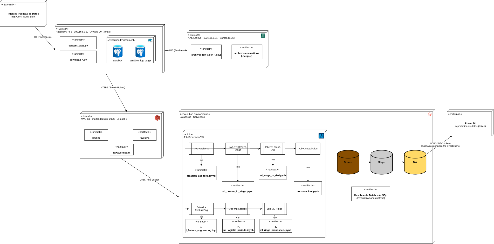

Arquitectura del Pipeline y Linaje de Datos¶
El linaje de datos (data lineage) describe el recorrido completo de cada registro: desde la fuente pública original hasta la fila en la base de datos analítica, incluyendo cada transformación aplicada en el camino. Esto permite auditar, reproducir y depurar cualquier resultado analítico.
Diagramas del Pipeline¶
Diagrama editable
El diagrama de despliegue completo (fuente editable en Draw.io) está disponible en: Ver diagrama de despliegue en Drive
Diagrama de Despliegue¶

El diagrama muestra la arquitectura de despliegue de extremo a extremo. Las fuentes públicas (INE, OMS, World Bank) son consumidas vía HTTPS por los scrapers Python (scraper_base.py + download_*.py) orquestados en la Raspberry Pi 5 (192.168.1.10, sesión tmux Always-On). La auditoría de cada operación de ingesta se registra en PostgreSQL (Docker, sandbox + sandbox_log_carga). Los archivos raw (.xlsx, .sav) se persisten en el NAS Lenovo (192.168.1.11, Samba/SMB); los archivos convertidos (.parquet) se transfieren a AWS S3 (mortalidad-gtm-2026, us-east-1) mediante boto3. Desde S3, Databricks Serverless lee los datos vía Delta/Auto Loader y ejecuta el Job Job-Bronze-to-DW, que orquesta cuatro notebooks en secuencia: creación de auditoría DW → ETL Bronze→Stage → ETL Stage→DW → constelación de indicadores internacionales (OMS/World Bank).
Metadatos de Linaje Inyectados en Cada Fila¶
Cada registro en todas las tablas Sandbox contiene tres columnas de trazabilidad que el script de ingesta inyecta automáticamente:
| Columna | Tipo | Descripción |
|---|---|---|
id_sandbox |
SERIAL (PK) | Identificador único de ingesta, no proviene de la fuente |
fuente_archivo |
VARCHAR(100) | Ruta exacta en S3 del archivo origen. Ej: raw/ine/defunciones_2018.xlsx |
fecha_carga |
TIMESTAMP | Marca de tiempo UTC de inserción en la base de datos |
Estas columnas permiten responder: ¿de qué archivo viene este registro y cuándo llegó?
Tabla de Auditoría: sandbox_log_carga¶
Cada evento de carga queda registrado en esta tabla. Los 44 eventos de la Fase 1 están disponibles para consulta.
-- Ver resumen de la ingesta completa
SELECT tabla_destino, estado, COUNT(*) AS eventos, SUM(filas_insertadas) AS total_filas
FROM sandbox.sandbox_log_carga
GROUP BY tabla_destino, estado
ORDER BY tabla_destino;
Reglas de Transformación Aplicadas en Memoria¶
Las siguientes transformaciones se aplicaron antes del aterrizaje en Sandbox, sin modificar los archivos en S3:
| Regla | Descripción | Motivo |
|---|---|---|
| Normalización de nombres | Todos los nombres de columna a minúsculas, sin espacios ni caracteres especiales | Compatibilidad PostgreSQL y consistencia entre años |
| Súper Esquema | Unión de todos los esquemas anuales del INE (~30 columnas) | Los años 2015–2024 no tienen la misma cantidad de columnas; relleno con NULL en ausencias |
| Cero Destrucción | Ninguna fila fue eliminada, incluso con valores nulos o esquemas incompletos | Preservar el dato crudo íntegro para trazabilidad |
| Reintentos automáticos | Máximo 3 intentos, timeout 120s por archivo | Mitigar latencias de red en S3 (especialmente defunciones_2018.xlsx) |
| Conversión SAV → Parquet | Archivos SPSS del período legacy convertidos vía pyreadstat |
Compatibilidad con Spark/Databricks |
Principio de inmutabilidad
El dato en Sandbox nunca se modifica. Cualquier transformación analítica (limpieza, anonimización, agregación) ocurre en capas superiores mediante Vistas SQL o jobs ETL, preservando siempre la trazabilidad al archivo origen.
Evidencia de Volumetría (Fase 1)¶
| Tabla Sandbox | Tabla Databricks | Filas |
|---|---|---|
sandbox_ine_defunciones |
bronze.xlsx_ine + bronze.sav_ine_legacy |
921,208 |
sandbox_oms_indicadores |
bronze.json_oms |
1,708 |
sandbox_worldbank_indicadores |
bronze.json_worldbank |
450 |
sandbox_gdrive_diccionario |
bronze.gdrive_docs |
1,837 |
sandbox_log_carga |
— | variable |
| TOTAL | 925,203 |
Diferencia de ~4,000 filas entre Sandbox y Databricks
La diferencia entre sandbox_ine_defunciones (921,208) y la suma de tablas Delta de INE (919,231) se debe a filas de metadatos de control de ingesta que se insertan en Sandbox pero no se replican a Databricks.